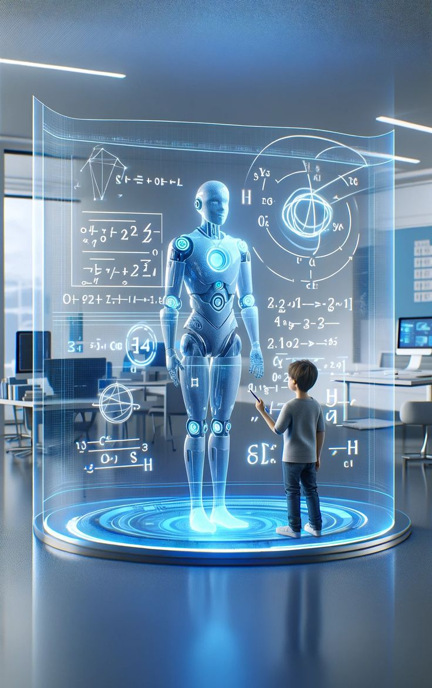
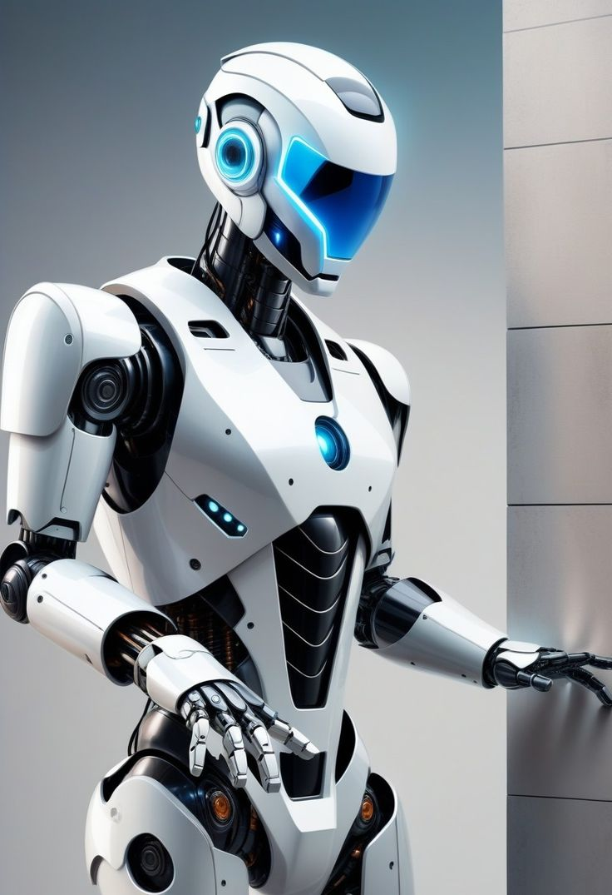
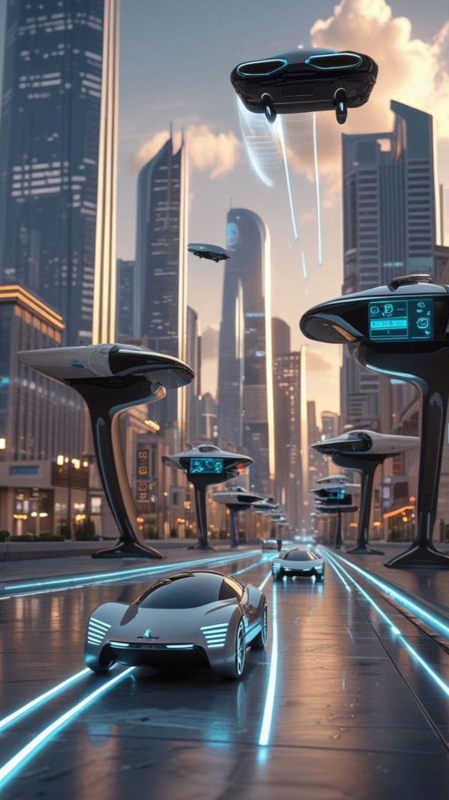

Agricultura
Robôs agrícolas ajudam a plantar, regar e colher com alta precisão e menos esforço humano.
Agricultura
Na agricultura, os robôs são utilizados para plantio, irrigação, monitoramento do solo e colheita automatizada. Isso reduz custos e aumenta a produtividade.
Medicina
Cirurgias assistidas por robôs garantem maior precisão e segurança para os pacientes.
Medicina
Na medicina, robôs cirúrgicos garantem precisão extrema, diminuem riscos e permitem cirurgias minimamente invasivas.

Culinária
Robôs chefs conseguem preparar refeições complexas com rapidez e perfeição, sem erros de receita!
Culinária
Robôs culinários são capazes de preparar pratos completos, seguir receitas complexas e trabalhar com rapidez e perfeição.

Educação
Robôs educacionais ajudam alunos a aprender programação, matemática e ciências de forma divertida.
Educação
Na educação, robôs ajudam no ensino de programação, matemática e ciências, tornando o aprendizado mais dinâmico e interativo.

Indústria
Robôs industriais realizam tarefas repetitivas e pesadas, aumentando a produtividade e segurança.
Indústria
Robôs industriais executam tarefas repetitivas, perigosas e de alta precisão, aumentando a segurança e eficiência nas fábricas.

Segurança
Robôs patrulheiros e drones inteligentes ajudam a manter cidades e empresas mais seguras.
Segurança
Na área de segurança, robôs patrulheiros e drones monitoram ambientes, detectam ameaças e ajudam na proteção de pessoas e empresas.
Exploração Espacial
Robôs espaciais como rovers exploram planetas e luas, coletando dados em ambientes extremos.
Exploração Espacial
Robôs espaciais como rovers exploram planetas, recolhem amostras e enviam dados de locais que seriam impossíveis para humanos visitarem.
Entretenimento
Robôs animatrônicos e drones criam espetáculos incríveis em parques, filmes e eventos.
Entretenimento
No entretenimento, robôs animatrônicos e drones criam efeitos especiais, shows de luzes e personagens realistas em parques e filmes.

Transporte
Veículos autônomos utilizam robótica avançada para navegar com segurança sem motorista humano.
Transporte
Veículos autónomos utilizam sensores e inteligência artificial para se moverem com segurança sem intervenção humana.
Casa Inteligente
Assistentes domésticos e aspiradores robóticos tornam o dia a dia mais prático e eficiente.
Casa Inteligente
Na robótica doméstica, robôs aspiradores, assistentes virtuais e sistemas automatizados tornam a rotina mais prática e económica.
Robótica Militar
Robôs militares e drones táticos realizam reconhecimento e vigilância com maior segurança.
Robótica Militar
Robôs militares e drones táticos realizam reconhecimento, desarmamento de bombas e vigilância de fronteiras com maior segurança.

Robótica em Desastres Naturais
Robôs de resgate ajudam a salvar vidas em áreas perigosas.
Robótica em Desastres Naturais
Robôs de resgate entram em áreas perigosas após terremotos, incêndios ou enchentes para localizar sobreviventes e ajudar equipes de emergência.